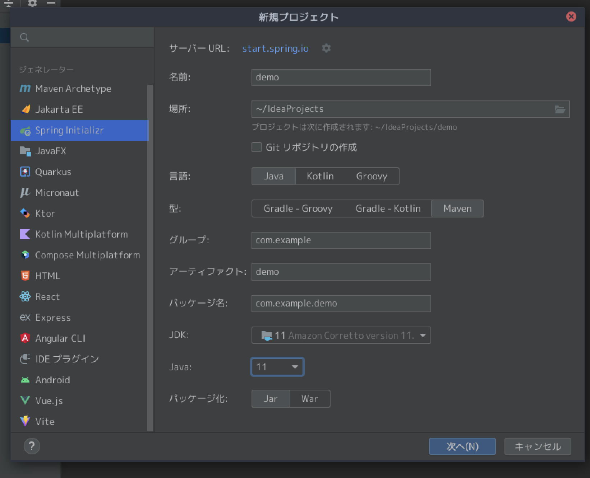
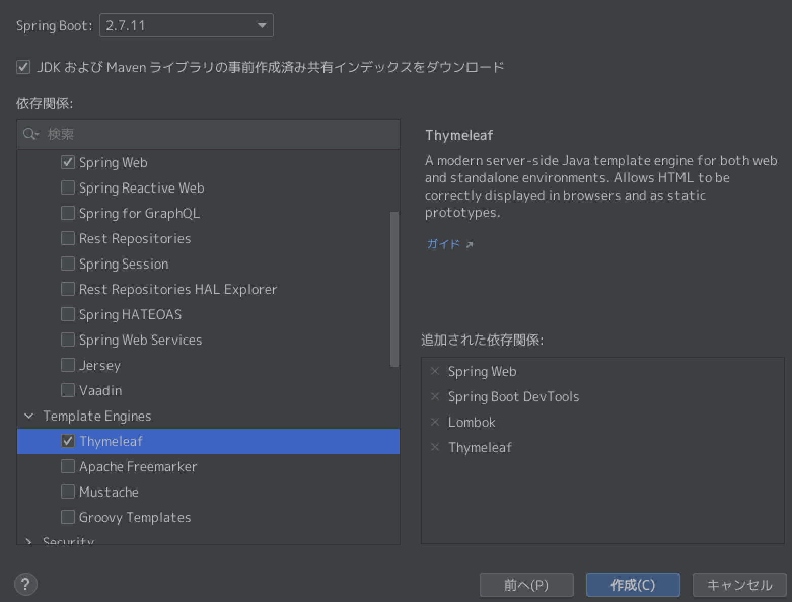
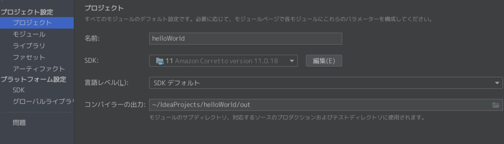
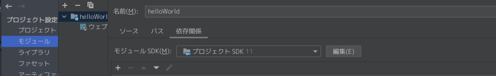
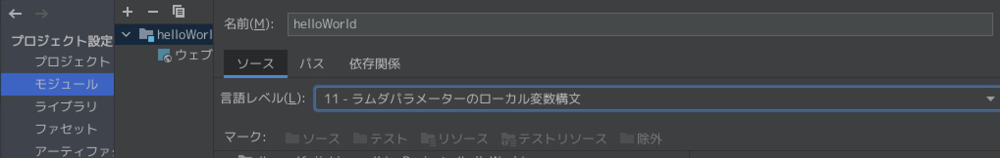
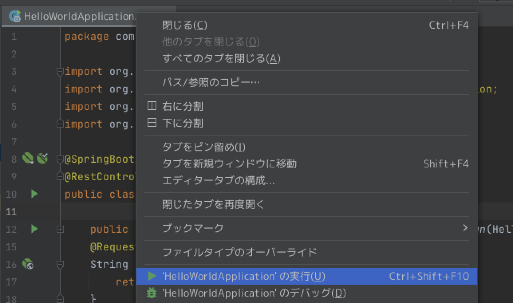
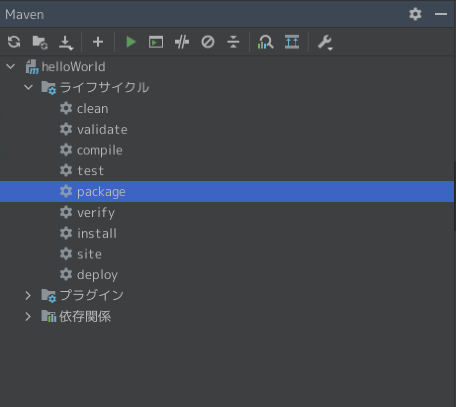
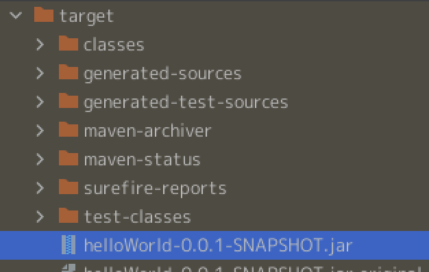
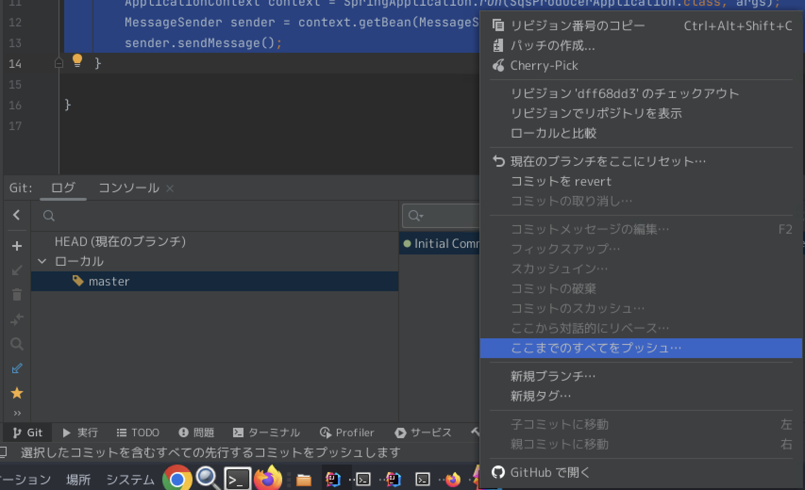

1. IntteliJでhelloworldしてみる¶
IntelliJを利用してブラウザ上にhellow worldを表示するアプリケーションを作成します。 そのアプリケーションをjarファイルに固める方法およびapplication.yamlを利用することで、実行時に、設定を変更する方法をまとめます。
1.1. javaのバージョンについて¶
PJを作成する際にjavaのバージョンと関連して、spring bootやspring frameworkのバージョンを指定する必要がある。
利用するjavaのバージョンを決めたら、対応表を確認して、spring bootのバージョンなどをIDEで指定する。
1.2. 新規プロジェクトの作成¶
新規プロジェクトで、作成Javaのバージョンは11を利用する

それに伴って、spring bootのバージョンは2.Xを指定する。 また、必要なライブラリも最初に指定する。

1.3. 各種設定の確認¶
Javaのバージョン指定が参考になる
プロジェクトを右クリック > Open Module Settings >
Project> Project SDK を確認します。

プロジェクトを右クリック > Open Module Settings > Modules>
Sources> Language level のJavaバージョン を確認します。

プロジェクトを右クリック > Open Module Settings > Modules>
Dependencies> Module SDK のJavaバージョン を確認します。

1.4. コーディング¶
作成したプロジェクトで、src/main/javaの配下にあるHelloWorldApplication.javaを以下に書き換える。
package com.example.helloworld;
import org.springframework.boot.SpringApplication;
import org.springframework.boot.autoconfigure.SpringBootApplication;
import org.springframework.web.bind.annotation.RequestMapping;
import org.springframework.web.bind.annotation.RestController;
@SpringBootApplication
@RestController
public class HelloWorldApplication {
public static void main(String[] args) {
SpringApplication.run(HelloWorldApplication.class, args);
}
@RequestMapping("/hello")
String index(){
return "Hello World!";
}
}
ファイルのタブを右クリックして、実行を

以下にアクセスhttp://localhost:8080/helloするとhello worldが表示される。
1.5. jarファイルに固める¶
作成したPJをjarファイルに固めて、別環境で実行するためには、右のmavenというタブを選択してpackeageを実行する

結果として、target配下にjarファイルが作成されている

cliから以下を実行すると、作成したPJを実行することができる
java -jar xxx.jar
1.6. application.ymlの切り替え¶
jarファイルを実行時に、利用するapplication.ymlを指定することで、環境ごとにコードの振る舞いを変更することができる。 例えば、検証時はlocalhostを参照して、本番環境ではawsを参照するなど。
まず、デフォルトでどの設定をを利用するのかapplication.ymlに記述
spring:
profiles:
active: dev
次にapplication-dev.ymlとapplication-prd.ymlを作成し、設定を記述
application-dev.yml
app:
message: Hello Dev!
server:
port: 8080
application-prd.yml
app:
message: Hello Prd!
server:
port: 8081
1.6.1. コーディング¶
以下のコードをHelloWorldApplication.javaに貼り付ける。
package com.example.helloworld;
import org.springframework.beans.factory.annotation.Value;
import org.springframework.boot.SpringApplication;
import org.springframework.boot.autoconfigure.SpringBootApplication;
import org.springframework.web.bind.annotation.RequestMapping;
import org.springframework.web.bind.annotation.RestController;
@SpringBootApplication
@RestController
public class HelloWorldApplication {
@Value("${app.message}")
private String message;
public static void main(String[] args) {
SpringApplication.run(HelloWorldApplication.class, args);
}
@RequestMapping("/hello")
String index(){
return message;
}
}
何も指定せずに実行すると、デフォルトでdevが有効となっているのでdevの設定ファイルによりHello Devとなる。明示的にprdを利用するとHello Prdとなる。指定方法は以下のセクション
1.6.2. jarファイルの実行時¶
jarファイルを実行する際に指定する。
java -jar -Dspring.profiles.active=prd XXXX.jar
上記を実行することで
devの場合はlocalhost:port8080にHello Devと表示される
prdの場合はlocalhost:port8081にHello Prdと表示される
2. IntelliJとgithubの連携¶
IntelliJとGithubアカウントとの連携は、参考サイトに従えば設定できる。
IntelliJ側で作成したPJをgithubにあげる方法
github側でリポジトリを作成
IntelliJ側のターミナルでgit init
git init
git commitまで実施
git add .
git commit -m "Initial Commit"
リモートブランチの設定
git remote add origin https://github.com/your-name/project-name.git
ローカルのリポジトリをpushするときは、IntelliJのGUIからやるとうまくいく
